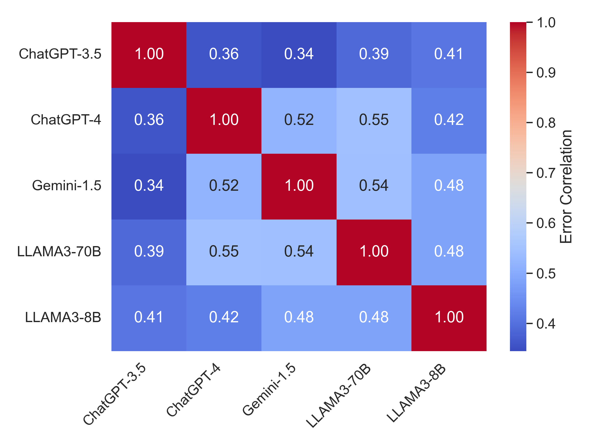
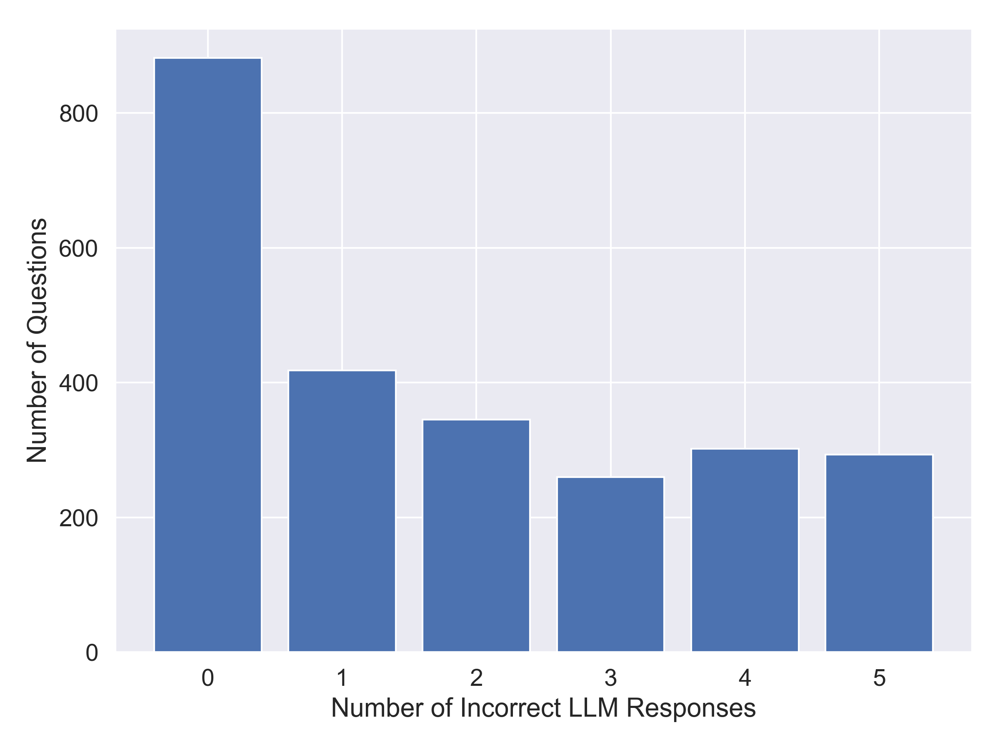
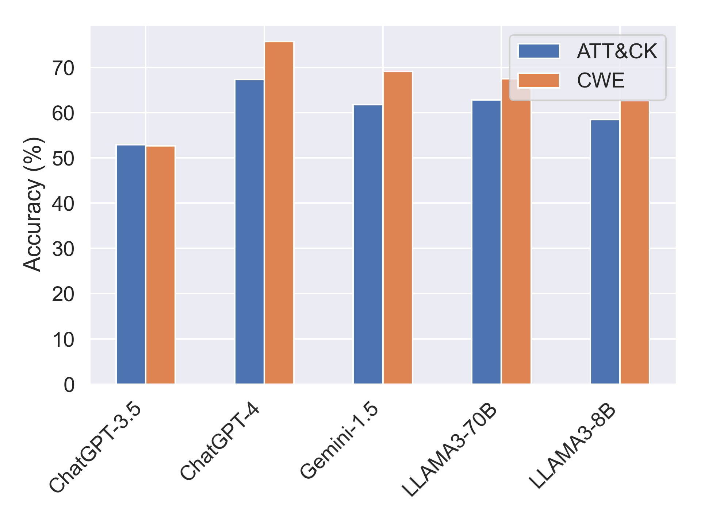
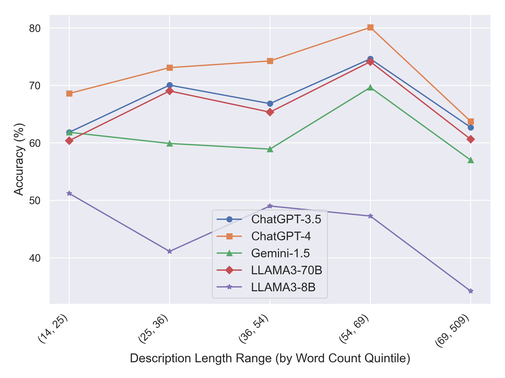
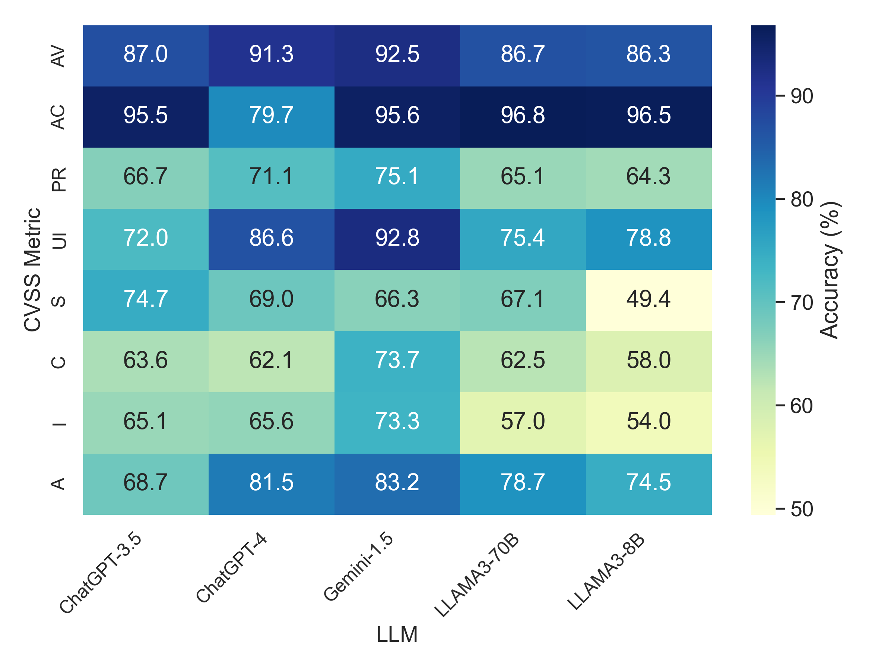

5 Task Families
Knowledge, vulnerability mapping, severity prediction, ATT&CK extraction, and threat attribution.
NeurIPS 2024 Datasets and Benchmarks Spotlight
CTIBench evaluates whether language models can reason over practical cyber threat intelligence tasks, from CTI knowledge and vulnerability analysis to ATT&CK technique extraction and threat actor attribution.
Cyber threat intelligence (CTI) is crucial in today's cybersecurity landscape, providing essential insights to understand and mitigate the ever-evolving cyber threats. The recent rise of Large Language Models (LLMs) have shown potential in this domain, but concerns about their reliability, accuracy, and hallucinations persist. CTIBench introduces a suite of benchmark datasets focused on evaluating LLM performance in CTI applications, providing insight into their strengths and weaknesses in applied cyber-threat analysis.
Knowledge, vulnerability mapping, severity prediction, ATT&CK extraction, and threat attribution.
Released benchmark examples plus a 2021 comparison split for root-cause mapping.
Tasks are grounded in NVD, CWE, CVSS, MITRE ATT&CK, and public threat reports.
Multiple-choice questions over CTI knowledge, standards, mitigations, attack patterns, and weaknesses.
Map CVE descriptions to Common Weakness Enumeration root causes.
Predict CVSS v3.1 vector strings from vulnerability descriptions.
Extract MITRE ATT&CK Enterprise technique IDs from threat descriptions.
Attribute anonymized threat reports to known threat actors or plausible related groups.
Best CTI-MCQ accuracy from ChatGPT-4.
Best CTI-RCM accuracy from ChatGPT-4.
Best CTI-VSP MAD from Gemini-1.5, where lower is better.
Best plausible CTI-TAA accuracy from ChatGPT-4.
| Model | CTI-MCQ Acc | CTI-RCM Acc | CTI-VSP MAD | CTI-ATE Macro-F1 | TAA Correct | TAA Plausible |
|---|---|---|---|---|---|---|
| ChatGPT-4 | 71.0 | 72.0 | 1.31 | 0.6388 | 52 | 86 |
| ChatGPT-3.5 | 54.1 | 67.2 | 1.57 | 0.3108 | 44 | 62 |
| Gemini-1.5 | 65.4 | 66.6 | 1.09 | 0.4612 | 38 | 74 |
| LLAMA3-70B | 65.7 | 65.9 | 1.83 | 0.4720 | 52 | 80 |
| LLAMA3-8B | 61.3 | 44.7 | 1.91 | 0.1562 | 28 | 36 |
CTIBench exposes structured weaknesses across CTI tasks. Larger models make correlated errors on multiple-choice CTI questions, performance varies between ATT&CK and CWE knowledge, and vulnerability severity prediction remains difficult for CVSS metrics such as privileges, scope, confidentiality, and integrity.





@article{alam2024ctibench,
title={Ctibench: A benchmark for evaluating llms in cyber threat intelligence},
author={Alam, Md Tanvirul and Bhusal, Dipkamal and Nguyen, Le and Rastogi, Nidhi},
journal={Advances in Neural Information Processing Systems},
volume={37},
pages={50805--50825},
year={2024}
}